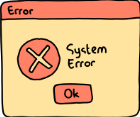

problem & solution
problem & solution

Every registration period, students run into roadblocks they didn't see coming: a class that clashes with another, a seat that fills up before they can enroll, or a prerequisite the university never clearly listed that leaves them stuck a semester behind.
To better understand students' experiences with degree planning, I asked University of Sharjah students how they decide which courses to take in upcoming semesters. Responses highlighted difficulties with prerequisites, course availability, and the order in which courses need to be completed. Students also shared experiences where unexpected registration issues forced them to reconsider their plans. One student mentioned that the head of her department indicated that two courses could be taken as corequisites, but the registration system did not allow the combination.
In my own experience, I was unable to register for a course because it required sophomore standing, a requirement that was not mentioned in the degree plan. I only discovered this on registration day, leaving me to quickly change my plan before sections filled up. Having to make this decision under time pressure was stressful, especially when I was unsure how it would affect my future semesters. The department itself was also unaware of the requirement. This reinforced the need for a tool that helps students identify potential issues earlier and understand how changes to one semester can affect their overall degree pathway.
PlanIt lets students build out their full course plan in advance, entering prerequisites, corequisites, and term availability once. The system checks feasibility as they drag courses into semesters, flags issues before registration day, and lets them instantly re-plan when a seat isn't available. From now on, no more starting from scratch when the system fails them.
A student's degree plan should not be determined by unexpected registration problems. When one course is delayed, the impact can extend into future semesters and make graduation take longer than planned. Having a clear view of course dependencies and alternative paths allows students to make informed decisions earlier, avoid unnecessary delays, and stay in control of their degree journey.
PlanIt is designed to grow with students. Future versions could make planning even more seamless through features such as automatic import of official degree plans, smarter alternative-plan suggestions when courses become unavailable, and personalized graduation-path analysis.